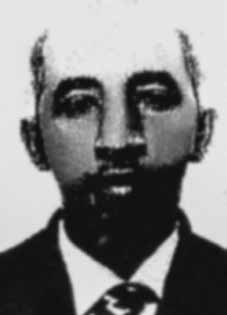

Geraldo
Bernardo
da Silva
CIRCUNSTÂNCIAS DA MORTE
Geraldo Bernardo da Silva cometeu suicídio no dia 17 de julho de 1969, após ter sido preso por agentes da repressão e encarcerado na Vila Militar, em Deodoro, no Rio de Janeiro (RJ). No dia 8 de julho de 1969, Geraldo Bernardo foi detido por policiais do Exército que invadiram a casa onde morava com a família. Os militares revistaram a casa e fizeram perguntas aos filhos e à esposa de Geraldo Bernardo, Iraci, tais como se ele havia queimado algum papel ou se o viram enterrando algum caderno ou livro. Em seguida, os agentes levaram Geraldo Bernardo para a Vila Militar, onde ficou detido por alguns dias. Após ter sido liberado e ter retornado à sua casa, Geraldo Bernardo passou a demonstrar sintomas de irritação sem aparente motivação. Com a persistência dos sintomas, Iraci e o irmão de Geraldo decidiram levá-lo, no dia 17 de julho, ao serviço médico da Rede Ferroviária Federal, localizada no 19o andar do edifício Central do Brasil, no Rio de Janeiro. Chegando lá, Geraldo disse que iria ao banheiro. Como estranhou sua demora, Iraci resolveu verificar o que havia acontecido. Quando chegou ao banheiro, Geraldo Bernardo havia se jogado da janela. De acordo com os depoimentos da família, as torturas sofridas durante o período em que esteve preso resultaram na alteração emocional que culminou na sua morte. Os restos mortais de Geraldo Bernardo da Silva foram enterrados no cemitério de Mesquita, no Rio de Janeiro.
Geraldo Bernardo da Silva committed suicide on July 17, 1969, after being arrested by repression agents and imprisoned in Vila Militar, in Deodoro, Rio de Janeiro (RJ). On July 8, 1969, Geraldo Bernardo was arrested by Army police officers who invaded the house where he lived with his family. The military searched the house and asked Geraldo Bernardo's children and wife, Iraci, questions, such as whether he had burned any paper or whether they had seen him burying any notebooks or books. The agents then took Geraldo Bernardo to Vila Militar, where he was detained for a few days. After being released and returning to his home, Geraldo Bernardo began to show symptoms of irritation without apparent motivation. With the persistence of symptoms, Iraci and Geraldo's brother decided to take him, on July 17th, to the medical service of Rede Ferroviária Federal, located on the 19th floor of the Central do Brasil building, in Rio de Janeiro. Once there, Geraldo said he was going to the bathroom. As he was surprised by the delay, Iraci decided to check what had happened. When he arrived at the bathroom, Geraldo Bernardo had thrown himself from the window. According to the family's statements, the torture suffered during the period he was imprisoned resulted in the emotional changes that culminated in his death. The remains of Geraldo Bernardo da Silva were buried in the Mesquita cemetery, in Rio de Janeiro.
Geraldo Bernardo da Silva se suicidó el 17 de julio de 1969, tras ser detenido por agentes de la represión y encarcelado en Vila Militar, en Deodoro, Río de Janeiro (RJ). El 8 de julio de 1969, Geraldo Bernardo fue detenido por policías del Ejército que invadieron la casa donde vivía con su familia. Los militares registraron la casa e hicieron preguntas a los hijos de Geraldo Bernardo y a su esposa, Iraci, como si había quemado algún papel o si lo habían visto enterrando algún cuaderno o libro. Luego, los agentes llevaron a Geraldo Bernardo a Vila Militar, donde estuvo detenido durante unos días. Luego de ser liberado y regresar a su domicilio, Geraldo Bernardo comenzó a presentar síntomas de irritación sin motivación aparente. Ante la persistencia de los síntomas, el hermano de Iraci y Geraldo decidió llevarlo, el 17 de julio, al servicio médico de la Red Ferroviária Federal, ubicada en el piso 19 del edificio Central do Brasil, en Río de Janeiro. Una vez allí, Geraldo dijo que se dirigía al baño. Sorprendido por el retraso, Iraci decidió comprobar qué había pasado. Cuando llegó al baño, Geraldo Bernardo se había arrojado por la ventana. Según declaraciones de la familia, las torturas sufridas durante el período que estuvo encarcelado provocaron los cambios emocionales que culminaron con su muerte. Los restos de Geraldo Bernardo da Silva fueron enterrados en el cementerio de Mesquita, en Río de Janeiro.